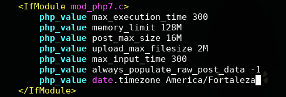
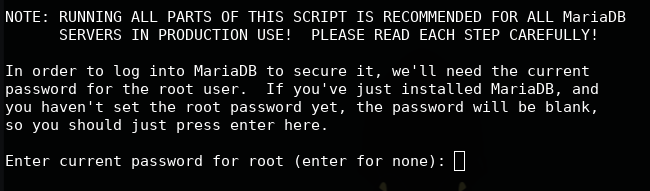
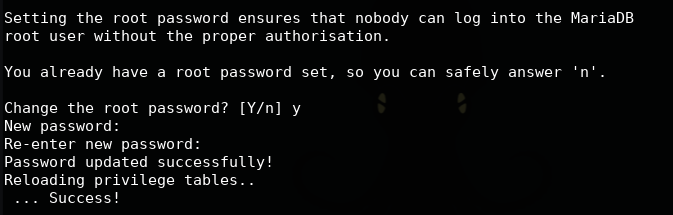
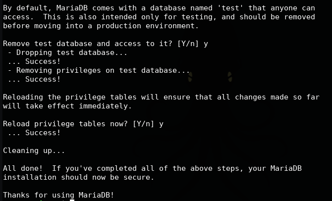
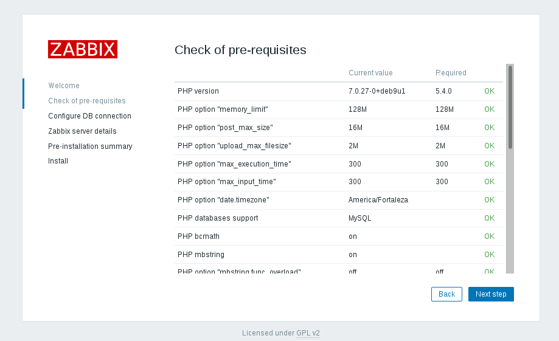
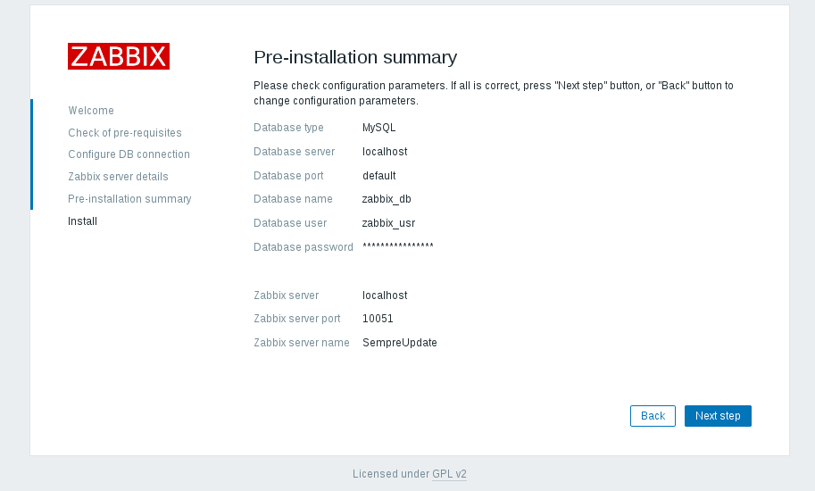

Este artigo vai tomar como base o material e os conhecimentos adqueridos no treinamento que fiz mês passado sobre o Zabbix, ministrado pelo Werneck Costa que é Zabbix Certified Specialist e Zabbix Certified Professional. Vamos aprender como instalar o Zabbix Server 3.4 no Debian 9.
A solução de monitoramento Zabbix é um Software Livre de última geração com classe empresarial. Ele é projetado para monitorar disponibilidade e desempenho dos componentes de uma infraestruturada de TI. O Zabbix é capaz de monitorar um número ilimitado de métricas e fornecer análises sofisticadas sobre a saúde da infraestrutura de TI. Sendo capaz de identificar a fonte de um problema nos sistemas de T.I, permite aos usuários Zabbix (SysOps) agirem rapidamente, reduzindo os custos associados com a paralisação.
Roteiro para instalação do Zabbix:
- Instalação do repositório Debian;
- Instalação dos pacotes Zabbix (servidor e cliente) e suas dependências;
- Configuração do banco de dados;
- Configurar interface web;
- Testar e validar a instalação acessado via navegador.
1. Instalação do repositório Debian
Primeiro, vamos logar como root para fazer a instalação. Feito isso, vamos baixar o pacote do Zabbix 3.4:
su
wget http://repo.zabbix.com/zabbix/3.4/debian/pool/main/z/zabbix-release/zabbix-release_3.4-1+stretch_all.deb
Agora vamos instalar o pacote que baixamos, digite:
dpkg -i zabbix-release_3.4-1+stretch_all.deb
Vamos atualizar o repositório do sistema:
apt update
2. Instalação dos pacotes Zabbix
Temos que instalar o pacote Zabbix Server e suas dependências:
apt install zabbix-server-mysql zabbix-frontend-php zabbix-agent zabbix-get -y
Após a execução do comando anterior, todos os componentes estarão instalados (servidor web, php, banco de dados e servidor Zabbix). Para fazer o primeiro acesso (teste), recarregue o Apache e abra o seu navegador e acesse o ip do seu servidor barra zabbix:
systemctl reload apache2
192.168.0.106/zabbix

Feito o primeiro teste, vamos voltar para emulador de terminal e editar alguns parâmetros de configuração do Apache para o frontend do Zabbix. Algumas configurações do PHP estão corretas, mas é necessário configurar o time zone. Para isso, vou usar o editor de linha de comando, o vim. Caso você não tenha instalado, use esse comando:
apt install vim
Vamos abrir o arquivo de configuração:
vim /etc/apache2/conf-available/zabbix.conf
Procure o seguinte bloco de código mod_php7.c, quando encontrar pressione a tecla i para entrar no modo de inserção do vim.
Retire o comentário (“#”) da linha php_value date.timezone e altere para o time zone do seu Estado,
caso você não saiba o seu time zone, procure aqui.

Feito isso, pressione Esc para sair do modo de inserção e depois :x que vai salvar o arquivo e sair do vim.
Agora vamos reiniciar o servidor Apache para aplicação da configuração feita no arquivo do PHP:
systemctl restart apache2
3. Configuração do banco de dados
Antes de voltar à interface web, será preciso executar algumas operações no banco de dados:
- Setar senha de root
- Criar banco Zabbix
- Criar usuário para acesso
Vamos executar o comando a seguir para melhorar a segurança do nosso banco de dados MariaDB, configurando uma senha para o root, remover o usuário de conexão anônima, desabilitar acesso de root feito de fora deste servidor, remover a base de test que possui acesso anônimo.
mysql_secure_installation
O utilitário solicitará uma senha de root para se conectar. Como não existe, pode deixar em branco e apertar o Enter:

O utilitário perguntará se deve ser setada uma senha para o root. Responda com um “y” e informe sua senha, vou colocar Allythy!:

Agora é só responder “y” para as próximas perguntas. No final o programa informará que a configuração foi finalizada:

Ainda no terminal, logue no console do MariaDB com usuário root e senha que você colocou acima.
mariadb -u root -p
Vamos criar um banco de dados chamado zabbix_db:
create database zabbix_db character set utf8 collate utf8_bin;
Depois criaremos um usuário chamado zabbix_usr para o banco que acabamos de criar e colocar como senha para esse usuário @Allythye@!. Caso você queira saber como criar usuário e conceder permissão, temos esse artigo sobre o assunto.
grant all privileges on zabbix_db.* to zabbix_usr@localhost identified by '@Allythye@!';
Feito isso, podemos sair do console do MariaDB:
exit;
Agora temos que fazer importação dos dados iniciais para o banco de dados que criamos, o zabbix_db:
zcat /usr/share/doc/zabbix-server-mysql/create.sql.gz | mysql -u zabbix_usr -p@Allythye@! zabbix_db
Vamos editar o arquivo de configuração do banco de dados do servidor Zabbix que se encontra no diretório /etc/zabbix:
vim /etc/zabbix/zabbix_server.conf
Procure pelos parâmetros abaixo e coloque as informações do seu banco de dados. Lembrando, pressione a tecla i para entrar no modo de inserção do vim, depois de alterar os parâmetros pressione Esc e depois :x para salvar e depois sair do vim.
DBName=zabbix_db
DBUser=zabbix_usr
DBPassword=@Sempre#Update@!

Feito isso, vamos reiniciar o servidor Zabbix:
systemctl restart zabbix-server
Configurando o Zabbix para inicializar junto ao sistema:
systemctl enable zabbix-server
4. Configurar interface web
Vamos voltar para a interface web, coloque o ip do seu servidor e no final coloque “/zabbix”, depois clique em Next step:
192.168.0.106/zabbix
Verifique se está tudo OK, se tiver, clique Next step:

Preencha os campos com as informações do banco de dados e depois clique em Next step:

Coloque um nome ,ip e porta do seu Servidor Zabbix:

Confirme tudo:

Instalação finalizada com sucesso, clique em Finish:

O acesso padrão é:
Usuário: Admin
Senha: zabbix
Pronto, com o servidor Zabbix instalado é só começar o monitoramento da sua rede, servidores e tudo que essa poderosa ferramenta tem a oferecer.